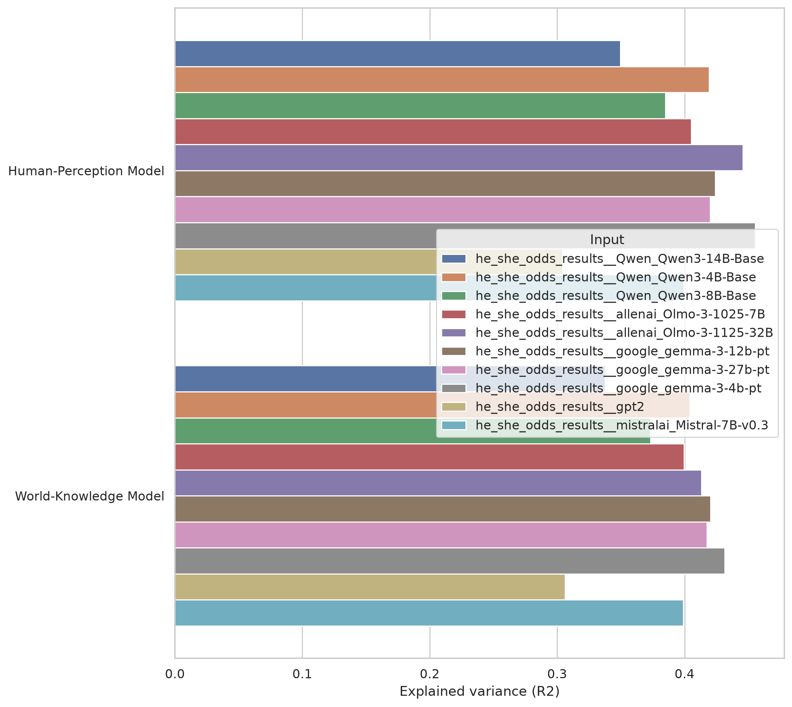
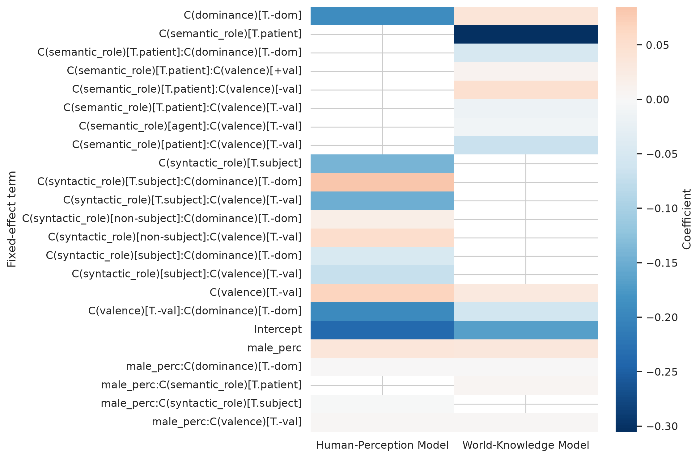

LassoCV-selected and OLS-refit interaction models for he/she log odds. MalePerc is joined from the first-column profession list in professions.csv. Generated on 2026-07-24.
| Input | Model | N | aic | bic | R2 | Residual variance |
|---|---|---|---|---|---|---|
| he_she_odds_results__Qwen_Qwen3-14B-Base | Human-Perception Model | 15360 | 49145.972 | 49214.727 | 0.350 | 1.435 |
| he_she_odds_results__Qwen_Qwen3-14B-Base | World-Knowledge Model | 15360 | 49426.462 | 49502.857 | 0.338 | 1.461 |
| he_she_odds_results__Qwen_Qwen3-4B-Base | Human-Perception Model | 15360 | 47672.283 | 47748.678 | 0.419 | 1.304 |
| he_she_odds_results__Qwen_Qwen3-4B-Base | World-Knowledge Model | 15360 | 48068.868 | 48152.903 | 0.404 | 1.338 |
| he_she_odds_results__Qwen_Qwen3-8B-Base | Human-Perception Model | 15360 | 48870.261 | 48954.295 | 0.385 | 1.409 |
| he_she_odds_results__Qwen_Qwen3-8B-Base | World-Knowledge Model | 15360 | 49155.988 | 49232.383 | 0.373 | 1.436 |
| he_she_odds_results__allenai_Olmo-3-1025-7B | Human-Perception Model | 15360 | 49070.723 | 49131.840 | 0.405 | 1.428 |
| he_she_odds_results__allenai_Olmo-3-1025-7B | World-Knowledge Model | 15360 | 49211.693 | 49249.891 | 0.400 | 1.441 |
| he_she_odds_results__allenai_Olmo-3-1125-32B | Human-Perception Model | 15360 | 50105.140 | 50189.175 | 0.446 | 1.527 |
| he_she_odds_results__allenai_Olmo-3-1125-32B | World-Knowledge Model | 15360 | 50980.714 | 51064.749 | 0.413 | 1.617 |
| he_she_odds_results__google_gemma-3-12b-pt | Human-Perception Model | 15360 | 45955.203 | 46031.598 | 0.424 | 1.166 |
| he_she_odds_results__google_gemma-3-12b-pt | World-Knowledge Model | 15360 | 46057.826 | 46141.861 | 0.420 | 1.173 |
| he_she_odds_results__google_gemma-3-27b-pt | Human-Perception Model | 15360 | 47073.689 | 47157.724 | 0.420 | 1.254 |
| he_she_odds_results__google_gemma-3-27b-pt | World-Knowledge Model | 15360 | 47140.411 | 47224.446 | 0.418 | 1.259 |
| he_she_odds_results__google_gemma-3-4b-pt | Human-Perception Model | 15360 | 43549.272 | 43625.667 | 0.455 | 0.997 |
| he_she_odds_results__google_gemma-3-4b-pt | World-Knowledge Model | 15360 | 44215.552 | 44299.587 | 0.431 | 1.041 |
| he_she_odds_results__gpt2 | Human-Perception Model | 15360 | 44114.948 | 44153.146 | 0.304 | 1.034 |
| he_she_odds_results__gpt2 | World-Knowledge Model | 15360 | 44083.967 | 44168.002 | 0.306 | 1.032 |
| he_she_odds_results__mistralai_Mistral-7B-v0.3 | Human-Perception Model | 15360 | 46446.179 | 46530.214 | 0.400 | 1.204 |
| he_she_odds_results__mistralai_Mistral-7B-v0.3 | World-Knowledge Model | 15360 | 46463.222 | 46547.257 | 0.399 | 1.205 |


| target_model | model | term | coef | std_err | t | p_value | ci_low | ci_high |
|---|---|---|---|---|---|---|---|---|
| he_she_odds_results__Qwen_Qwen3-14B-Base | World-Knowledge Model | Intercept | -0.168 | 0.054 | -3.106 | 0.002 | -0.274 | -0.062 |
| he_she_odds_results__Qwen_Qwen3-14B-Base | World-Knowledge Model | C(semantic_role)[T.patient] | -0.305 | 0.065 | -4.731 | 0.000 | -0.432 | -0.179 |
| he_she_odds_results__Qwen_Qwen3-14B-Base | World-Knowledge Model | C(valence)[T.-val] | 0.029 | 0.065 | 0.454 | 0.650 | -0.097 | 0.156 |
| he_she_odds_results__Qwen_Qwen3-14B-Base | World-Knowledge Model | C(dominance)[T.-dom] | 0.038 | 0.034 | 1.139 | 0.255 | -0.028 | 0.105 |
| he_she_odds_results__Qwen_Qwen3-14B-Base | World-Knowledge Model | C(semantic_role)[T.patient]:C(valence)[T.-val] | -0.015 | 0.039 | -0.379 | 0.705 | -0.091 | 0.062 |
| he_she_odds_results__Qwen_Qwen3-14B-Base | World-Knowledge Model | C(semantic_role)[T.patient]:C(dominance)[T.-dom] | -0.051 | 0.039 | -1.317 | 0.188 | -0.128 | 0.025 |
| he_she_odds_results__Qwen_Qwen3-14B-Base | World-Knowledge Model | C(valence)[T.-val]:C(dominance)[T.-dom] | -0.057 | 0.039 | -1.456 | 0.146 | -0.133 | 0.020 |
| he_she_odds_results__Qwen_Qwen3-14B-Base | World-Knowledge Model | male_perc | 0.034 | 0.001 | 44.945 | 0.000 | 0.032 | 0.035 |
| he_she_odds_results__Qwen_Qwen3-14B-Base | World-Knowledge Model | male_perc:C(semantic_role)[T.patient] | 0.005 | 0.001 | 6.076 | 0.000 | 0.004 | 0.007 |
| he_she_odds_results__Qwen_Qwen3-14B-Base | World-Knowledge Model | male_perc:C(valence)[T.-val] | 0.003 | 0.001 | 3.661 | 0.000 | 0.001 | 0.005 |
| he_she_odds_results__Qwen_Qwen3-14B-Base | Human-Perception Model | Intercept | -0.236 | 0.053 | -4.473 | 0.000 | -0.339 | -0.133 |
| he_she_odds_results__Qwen_Qwen3-14B-Base | Human-Perception Model | C(syntactic_role)[T.subject] | -0.141 | 0.064 | -2.205 | 0.027 | -0.266 | -0.016 |
| he_she_odds_results__Qwen_Qwen3-14B-Base | Human-Perception Model | C(valence)[T.-val] | 0.068 | 0.061 | 1.112 | 0.266 | -0.052 | 0.187 |
| he_she_odds_results__Qwen_Qwen3-14B-Base | Human-Perception Model | C(syntactic_role)[T.subject]:C(valence)[T.-val] | -0.149 | 0.039 | -3.841 | 0.000 | -0.224 | -0.073 |
| he_she_odds_results__Qwen_Qwen3-14B-Base | Human-Perception Model | C(syntactic_role)[non-subject]:C(dominance)[T.-dom] | 0.019 | 0.027 | 0.689 | 0.491 | -0.035 | 0.072 |
| he_she_odds_results__Qwen_Qwen3-14B-Base | Human-Perception Model | C(syntactic_role)[subject]:C(dominance)[T.-dom] | -0.050 | 0.027 | -1.830 | 0.067 | -0.104 | 0.004 |
| he_she_odds_results__Qwen_Qwen3-14B-Base | Human-Perception Model | male_perc | 0.037 | 0.001 | 49.812 | 0.000 | 0.036 | 0.038 |
| he_she_odds_results__Qwen_Qwen3-14B-Base | Human-Perception Model | male_perc:C(syntactic_role)[T.subject] | -0.001 | 0.001 | -1.586 | 0.113 | -0.003 | 0.000 |
| he_she_odds_results__Qwen_Qwen3-14B-Base | Human-Perception Model | male_perc:C(valence)[T.-val] | 0.003 | 0.001 | 3.694 | 0.000 | 0.001 | 0.005 |
| he_she_odds_results__Qwen_Qwen3-4B-Base | World-Knowledge Model | Intercept | -0.770 | 0.058 | -13.249 | 0.000 | -0.883 | -0.656 |
| he_she_odds_results__Qwen_Qwen3-4B-Base | World-Knowledge Model | C(semantic_role)[T.patient] | 0.030 | 0.062 | 0.491 | 0.623 | -0.091 | 0.151 |
| he_she_odds_results__Qwen_Qwen3-4B-Base | World-Knowledge Model | C(valence)[T.-val] | 0.142 | 0.062 | 2.297 | 0.022 | 0.021 | 0.263 |
| he_she_odds_results__Qwen_Qwen3-4B-Base | World-Knowledge Model | C(dominance)[T.-dom] | 0.080 | 0.062 | 1.298 | 0.194 | -0.041 | 0.201 |
| he_she_odds_results__Qwen_Qwen3-4B-Base | World-Knowledge Model | C(semantic_role)[T.patient]:C(valence)[T.-val] | 0.049 | 0.037 | 1.326 | 0.185 | -0.024 | 0.123 |
| he_she_odds_results__Qwen_Qwen3-4B-Base | World-Knowledge Model | C(semantic_role)[T.patient]:C(dominance)[T.-dom] | -0.143 | 0.037 | -3.834 | 0.000 | -0.216 | -0.070 |
| he_she_odds_results__Qwen_Qwen3-4B-Base | World-Knowledge Model | C(valence)[T.-val]:C(dominance)[T.-dom] | -0.195 | 0.037 | -5.212 | 0.000 | -0.268 | -0.121 |
| he_she_odds_results__Qwen_Qwen3-4B-Base | World-Knowledge Model | male_perc | 0.039 | 0.001 | 47.642 | 0.000 | 0.038 | 0.041 |
| he_she_odds_results__Qwen_Qwen3-4B-Base | World-Knowledge Model | male_perc:C(semantic_role)[T.patient] | 0.003 | 0.001 | 3.157 | 0.002 | 0.001 | 0.004 |
| he_she_odds_results__Qwen_Qwen3-4B-Base | World-Knowledge Model | male_perc:C(valence)[T.-val] | 0.001 | 0.001 | 1.244 | 0.214 | -0.001 | 0.003 |
| he_she_odds_results__Qwen_Qwen3-4B-Base | World-Knowledge Model | male_perc:C(dominance)[T.-dom] | 0.001 | 0.001 | 1.458 | 0.145 | -0.000 | 0.003 |
| he_she_odds_results__Qwen_Qwen3-4B-Base | Human-Perception Model | Intercept | -0.604 | 0.057 | -10.672 | 0.000 | -0.715 | -0.493 |
| he_she_odds_results__Qwen_Qwen3-4B-Base | Human-Perception Model | C(syntactic_role)[T.subject] | -0.301 | 0.058 | -5.179 | 0.000 | -0.415 | -0.187 |
| he_she_odds_results__Qwen_Qwen3-4B-Base | Human-Perception Model | C(valence)[T.-val] | 0.166 | 0.058 | 2.867 | 0.004 | 0.053 | 0.280 |
| he_she_odds_results__Qwen_Qwen3-4B-Base | Human-Perception Model | C(syntactic_role)[non-subject]:C(dominance)[T.-dom] | -0.021 | 0.061 | -0.341 | 0.733 | -0.140 | 0.099 |
| he_she_odds_results__Qwen_Qwen3-4B-Base | Human-Perception Model | C(syntactic_role)[subject]:C(dominance)[T.-dom] | 0.038 | 0.061 | 0.620 | 0.535 | -0.082 | 0.157 |
| he_she_odds_results__Qwen_Qwen3-4B-Base | Human-Perception Model | C(valence)[T.-val]:C(dominance)[T.-dom] | -0.195 | 0.037 | -5.280 | 0.000 | -0.267 | -0.122 |
| he_she_odds_results__Qwen_Qwen3-4B-Base | Human-Perception Model | male_perc | 0.042 | 0.001 | 51.145 | 0.000 | 0.040 | 0.043 |
| he_she_odds_results__Qwen_Qwen3-4B-Base | Human-Perception Model | male_perc:C(syntactic_role)[T.subject] | -0.002 | 0.001 | -2.573 | 0.010 | -0.004 | -0.001 |
| he_she_odds_results__Qwen_Qwen3-4B-Base | Human-Perception Model | male_perc:C(valence)[T.-val] | 0.001 | 0.001 | 1.260 | 0.208 | -0.001 | 0.003 |
| he_she_odds_results__Qwen_Qwen3-4B-Base | Human-Perception Model | male_perc:C(dominance)[T.-dom] | 0.001 | 0.001 | 1.477 | 0.140 | -0.000 | 0.003 |
| he_she_odds_results__Qwen_Qwen3-8B-Base | World-Knowledge Model | Intercept | -0.030 | 0.059 | -0.507 | 0.612 | -0.147 | 0.086 |
| he_she_odds_results__Qwen_Qwen3-8B-Base | World-Knowledge Model | C(semantic_role)[T.patient] | -0.179 | 0.061 | -2.937 | 0.003 | -0.298 | -0.060 |
| he_she_odds_results__Qwen_Qwen3-8B-Base | World-Knowledge Model | C(valence)[T.-val] | -0.046 | 0.064 | -0.721 | 0.471 | -0.171 | 0.079 |
| he_she_odds_results__Qwen_Qwen3-8B-Base | World-Knowledge Model | C(dominance)[T.-dom] | -0.150 | 0.061 | -2.456 | 0.014 | -0.269 | -0.030 |
| he_she_odds_results__Qwen_Qwen3-8B-Base | World-Knowledge Model | C(semantic_role)[T.patient]:C(valence)[T.-val] | 0.111 | 0.039 | 2.872 | 0.004 | 0.035 | 0.187 |
| he_she_odds_results__Qwen_Qwen3-8B-Base | World-Knowledge Model | C(valence)[T.-val]:C(dominance)[T.-dom] | 0.049 | 0.039 | 1.275 | 0.203 | -0.027 | 0.125 |
| he_she_odds_results__Qwen_Qwen3-8B-Base | World-Knowledge Model | male_perc | 0.037 | 0.001 | 42.972 | 0.000 | 0.035 | 0.039 |
| he_she_odds_results__Qwen_Qwen3-8B-Base | World-Knowledge Model | male_perc:C(semantic_role)[T.patient] | 0.004 | 0.001 | 4.125 | 0.000 | 0.002 | 0.005 |
| he_she_odds_results__Qwen_Qwen3-8B-Base | World-Knowledge Model | male_perc:C(valence)[T.-val] | 0.003 | 0.001 | 3.294 | 0.001 | 0.001 | 0.005 |
| he_she_odds_results__Qwen_Qwen3-8B-Base | World-Knowledge Model | male_perc:C(dominance)[T.-dom] | 0.001 | 0.001 | 1.234 | 0.217 | -0.001 | 0.003 |
| he_she_odds_results__Qwen_Qwen3-8B-Base | Human-Perception Model | Intercept | 0.168 | 0.060 | 2.817 | 0.005 | 0.051 | 0.285 |
| he_she_odds_results__Qwen_Qwen3-8B-Base | Human-Perception Model | C(syntactic_role)[T.subject] | -0.575 | 0.063 | -9.078 | 0.000 | -0.699 | -0.451 |
| he_she_odds_results__Qwen_Qwen3-8B-Base | Human-Perception Model | C(valence)[T.-val] | 0.080 | 0.063 | 1.256 | 0.209 | -0.045 | 0.204 |
| he_she_odds_results__Qwen_Qwen3-8B-Base | Human-Perception Model | C(dominance)[T.-dom] | -0.192 | 0.063 | -3.034 | 0.002 | -0.316 | -0.068 |
| he_she_odds_results__Qwen_Qwen3-8B-Base | Human-Perception Model | C(syntactic_role)[T.subject]:C(valence)[T.-val] | -0.140 | 0.038 | -3.659 | 0.000 | -0.215 | -0.065 |
| he_she_odds_results__Qwen_Qwen3-8B-Base | Human-Perception Model | C(syntactic_role)[T.subject]:C(dominance)[T.-dom] | 0.085 | 0.038 | 2.220 | 0.026 | 0.010 | 0.160 |
| he_she_odds_results__Qwen_Qwen3-8B-Base | Human-Perception Model | C(valence)[T.-val]:C(dominance)[T.-dom] | 0.049 | 0.038 | 1.286 | 0.198 | -0.026 | 0.124 |
| he_she_odds_results__Qwen_Qwen3-8B-Base | Human-Perception Model | male_perc | 0.037 | 0.001 | 42.950 | 0.000 | 0.035 | 0.038 |
| he_she_odds_results__Qwen_Qwen3-8B-Base | Human-Perception Model | male_perc:C(syntactic_role)[T.subject] | 0.004 | 0.001 | 5.014 | 0.000 | 0.003 | 0.006 |
| he_she_odds_results__Qwen_Qwen3-8B-Base | Human-Perception Model | male_perc:C(valence)[T.-val] | 0.003 | 0.001 | 3.325 | 0.001 | 0.001 | 0.004 |
| he_she_odds_results__Qwen_Qwen3-8B-Base | Human-Perception Model | male_perc:C(dominance)[T.-dom] | 0.001 | 0.001 | 1.246 | 0.213 | -0.001 | 0.003 |
| he_she_odds_results__allenai_Olmo-3-1025-7B | World-Knowledge Model | Intercept | -0.744 | 0.031 | -24.357 | 0.000 | -0.804 | -0.684 |
| he_she_odds_results__allenai_Olmo-3-1025-7B | World-Knowledge Model | C(dominance)[T.-dom] | -0.025 | 0.019 | -1.276 | 0.202 | -0.063 | 0.013 |
| he_she_odds_results__allenai_Olmo-3-1025-7B | World-Knowledge Model | male_perc | 0.041 | 0.000 | 86.878 | 0.000 | 0.040 | 0.042 |
| he_she_odds_results__allenai_Olmo-3-1025-7B | World-Knowledge Model | male_perc:C(semantic_role)[T.patient] | 0.001 | 0.000 | 3.645 | 0.000 | 0.000 | 0.002 |
| he_she_odds_results__allenai_Olmo-3-1025-7B | World-Knowledge Model | male_perc:C(valence)[T.-val] | 0.003 | 0.000 | 9.619 | 0.000 | 0.002 | 0.003 |
| he_she_odds_results__allenai_Olmo-3-1025-7B | Human-Perception Model | Intercept | -0.666 | 0.045 | -14.780 | 0.000 | -0.755 | -0.578 |
| he_she_odds_results__allenai_Olmo-3-1025-7B | Human-Perception Model | C(syntactic_role)[T.subject] | -0.147 | 0.033 | -4.399 | 0.000 | -0.212 | -0.081 |
| he_she_odds_results__allenai_Olmo-3-1025-7B | Human-Perception Model | C(syntactic_role)[non-subject]:C(valence)[T.-val] | 0.054 | 0.061 | 0.886 | 0.376 | -0.065 | 0.173 |
| he_she_odds_results__allenai_Olmo-3-1025-7B | Human-Perception Model | C(syntactic_role)[subject]:C(valence)[T.-val] | -0.069 | 0.061 | -1.136 | 0.256 | -0.188 | 0.050 |
| he_she_odds_results__allenai_Olmo-3-1025-7B | Human-Perception Model | C(syntactic_role)[non-subject]:C(dominance)[T.-dom] | 0.002 | 0.027 | 0.081 | 0.935 | -0.051 | 0.056 |
| he_she_odds_results__allenai_Olmo-3-1025-7B | Human-Perception Model | C(syntactic_role)[subject]:C(dominance)[T.-dom] | -0.052 | 0.027 | -1.895 | 0.058 | -0.105 | 0.002 |
| he_she_odds_results__allenai_Olmo-3-1025-7B | Human-Perception Model | male_perc | 0.042 | 0.001 | 69.058 | 0.000 | 0.041 | 0.043 |
| he_she_odds_results__allenai_Olmo-3-1025-7B | Human-Perception Model | male_perc:C(valence)[T.-val] | 0.003 | 0.001 | 3.358 | 0.001 | 0.001 | 0.005 |
| he_she_odds_results__allenai_Olmo-3-1125-32B | World-Knowledge Model | Intercept | -0.964 | 0.064 | -15.102 | 0.000 | -1.090 | -0.839 |
| he_she_odds_results__allenai_Olmo-3-1125-32B | World-Knowledge Model | C(semantic_role)[T.patient] | -0.112 | 0.068 | -1.644 | 0.100 | -0.245 | 0.021 |
| he_she_odds_results__allenai_Olmo-3-1125-32B | World-Knowledge Model | C(dominance)[T.-dom] | -0.016 | 0.068 | -0.231 | 0.817 | -0.149 | 0.117 |
| he_she_odds_results__allenai_Olmo-3-1125-32B | World-Knowledge Model | C(semantic_role)[agent]:C(valence)[T.-val] | -0.011 | 0.068 | -0.166 | 0.868 | -0.144 | 0.122 |
| he_she_odds_results__allenai_Olmo-3-1125-32B | World-Knowledge Model | C(semantic_role)[patient]:C(valence)[T.-val] | -0.069 | 0.068 | -1.014 | 0.310 | -0.202 | 0.064 |
| he_she_odds_results__allenai_Olmo-3-1125-32B | World-Knowledge Model | C(semantic_role)[T.patient]:C(dominance)[T.-dom] | -0.027 | 0.041 | -0.663 | 0.507 | -0.108 | 0.053 |
| he_she_odds_results__allenai_Olmo-3-1125-32B | World-Knowledge Model | C(valence)[T.-val]:C(dominance)[T.-dom] | 0.036 | 0.041 | 0.877 | 0.381 | -0.044 | 0.116 |
| he_she_odds_results__allenai_Olmo-3-1125-32B | World-Knowledge Model | male_perc | 0.045 | 0.001 | 49.911 | 0.000 | 0.044 | 0.047 |
| he_she_odds_results__allenai_Olmo-3-1125-32B | World-Knowledge Model | male_perc:C(semantic_role)[T.patient] | 0.003 | 0.001 | 2.800 | 0.005 | 0.001 | 0.004 |
| he_she_odds_results__allenai_Olmo-3-1125-32B | World-Knowledge Model | male_perc:C(valence)[T.-val] | 0.002 | 0.001 | 2.602 | 0.009 | 0.001 | 0.004 |
| he_she_odds_results__allenai_Olmo-3-1125-32B | World-Knowledge Model | male_perc:C(dominance)[T.-dom] | -0.002 | 0.001 | -1.687 | 0.092 | -0.003 | 0.000 |
| he_she_odds_results__allenai_Olmo-3-1125-32B | Human-Perception Model | Intercept | -0.806 | 0.062 | -12.982 | 0.000 | -0.927 | -0.684 |
| he_she_odds_results__allenai_Olmo-3-1125-32B | Human-Perception Model | C(syntactic_role)[T.subject] | -0.429 | 0.066 | -6.504 | 0.000 | -0.558 | -0.300 |
| he_she_odds_results__allenai_Olmo-3-1125-32B | Human-Perception Model | C(dominance)[T.-dom] | -0.086 | 0.066 | -1.300 | 0.194 | -0.215 | 0.044 |
| he_she_odds_results__allenai_Olmo-3-1125-32B | Human-Perception Model | C(syntactic_role)[non-subject]:C(valence)[T.-val] | 0.013 | 0.066 | 0.192 | 0.848 | -0.117 | 0.142 |
| he_she_odds_results__allenai_Olmo-3-1125-32B | Human-Perception Model | C(syntactic_role)[subject]:C(valence)[T.-val] | -0.093 | 0.066 | -1.406 | 0.160 | -0.222 | 0.037 |
| he_she_odds_results__allenai_Olmo-3-1125-32B | Human-Perception Model | C(syntactic_role)[T.subject]:C(dominance)[T.-dom] | 0.113 | 0.040 | 2.829 | 0.005 | 0.035 | 0.191 |
| he_she_odds_results__allenai_Olmo-3-1125-32B | Human-Perception Model | C(valence)[T.-val]:C(dominance)[T.-dom] | 0.036 | 0.040 | 0.902 | 0.367 | -0.042 | 0.114 |
| he_she_odds_results__allenai_Olmo-3-1125-32B | Human-Perception Model | male_perc | 0.048 | 0.001 | 54.297 | 0.000 | 0.046 | 0.050 |
| he_she_odds_results__allenai_Olmo-3-1125-32B | Human-Perception Model | male_perc:C(syntactic_role)[T.subject] | -0.003 | 0.001 | -3.006 | 0.003 | -0.004 | -0.001 |
| he_she_odds_results__allenai_Olmo-3-1125-32B | Human-Perception Model | male_perc:C(valence)[T.-val] | 0.002 | 0.001 | 2.677 | 0.007 | 0.001 | 0.004 |
| he_she_odds_results__allenai_Olmo-3-1125-32B | Human-Perception Model | male_perc:C(dominance)[T.-dom] | -0.002 | 0.001 | -1.736 | 0.083 | -0.003 | 0.000 |
| he_she_odds_results__google_gemma-3-12b-pt | World-Knowledge Model | Intercept | -0.524 | 0.054 | -9.638 | 0.000 | -0.631 | -0.418 |
| he_she_odds_results__google_gemma-3-12b-pt | World-Knowledge Model | C(valence)[T.-val] | -0.040 | 0.058 | -0.688 | 0.491 | -0.153 | 0.074 |
| he_she_odds_results__google_gemma-3-12b-pt | World-Knowledge Model | C(dominance)[T.-dom] | 0.014 | 0.058 | 0.248 | 0.804 | -0.099 | 0.128 |
| he_she_odds_results__google_gemma-3-12b-pt | World-Knowledge Model | C(semantic_role)[T.patient]:C(valence)[+val] | 0.011 | 0.058 | 0.195 | 0.845 | -0.102 | 0.125 |
| he_she_odds_results__google_gemma-3-12b-pt | World-Knowledge Model | C(semantic_role)[T.patient]:C(valence)[-val] | 0.049 | 0.058 | 0.845 | 0.398 | -0.064 | 0.162 |
| he_she_odds_results__google_gemma-3-12b-pt | World-Knowledge Model | C(semantic_role)[T.patient]:C(dominance)[T.-dom] | -0.039 | 0.035 | -1.105 | 0.269 | -0.107 | 0.030 |
| he_she_odds_results__google_gemma-3-12b-pt | World-Knowledge Model | C(valence)[T.-val]:C(dominance)[T.-dom] | -0.050 | 0.035 | -1.427 | 0.154 | -0.118 | 0.019 |
| he_she_odds_results__google_gemma-3-12b-pt | World-Knowledge Model | male_perc | 0.040 | 0.001 | 51.448 | 0.000 | 0.038 | 0.041 |
| he_she_odds_results__google_gemma-3-12b-pt | World-Knowledge Model | male_perc:C(semantic_role)[T.patient] | -0.000 | 0.001 | -0.527 | 0.598 | -0.002 | 0.001 |
| he_she_odds_results__google_gemma-3-12b-pt | World-Knowledge Model | male_perc:C(valence)[T.-val] | 0.002 | 0.001 | 2.358 | 0.018 | 0.000 | 0.003 |
| he_she_odds_results__google_gemma-3-12b-pt | World-Knowledge Model | male_perc:C(dominance)[T.-dom] | 0.000 | 0.001 | 0.625 | 0.532 | -0.001 | 0.002 |
| he_she_odds_results__google_gemma-3-12b-pt | Human-Perception Model | Intercept | -0.457 | 0.048 | -9.446 | 0.000 | -0.552 | -0.362 |
| he_she_odds_results__google_gemma-3-12b-pt | Human-Perception Model | C(syntactic_role)[T.subject] | -0.155 | 0.058 | -2.686 | 0.007 | -0.268 | -0.042 |
| he_she_odds_results__google_gemma-3-12b-pt | Human-Perception Model | C(syntactic_role)[non-subject]:C(valence)[T.-val] | -0.005 | 0.058 | -0.082 | 0.934 | -0.118 | 0.108 |
| he_she_odds_results__google_gemma-3-12b-pt | Human-Perception Model | C(syntactic_role)[subject]:C(valence)[T.-val] | -0.037 | 0.058 | -0.647 | 0.518 | -0.150 | 0.076 |
| he_she_odds_results__google_gemma-3-12b-pt | Human-Perception Model | C(syntactic_role)[non-subject]:C(dominance)[T.-dom] | -0.014 | 0.030 | -0.478 | 0.632 | -0.074 | 0.045 |
| he_she_odds_results__google_gemma-3-12b-pt | Human-Perception Model | C(syntactic_role)[subject]:C(dominance)[T.-dom] | 0.066 | 0.030 | 2.185 | 0.029 | 0.007 | 0.125 |
| he_she_odds_results__google_gemma-3-12b-pt | Human-Perception Model | C(valence)[T.-val]:C(dominance)[T.-dom] | -0.050 | 0.035 | -1.432 | 0.152 | -0.118 | 0.018 |
| he_she_odds_results__google_gemma-3-12b-pt | Human-Perception Model | male_perc | 0.040 | 0.001 | 60.149 | 0.000 | 0.039 | 0.042 |
| he_she_odds_results__google_gemma-3-12b-pt | Human-Perception Model | male_perc:C(syntactic_role)[T.subject] | -0.001 | 0.001 | -0.846 | 0.398 | -0.002 | 0.001 |
| he_she_odds_results__google_gemma-3-12b-pt | Human-Perception Model | male_perc:C(valence)[T.-val] | 0.002 | 0.001 | 2.366 | 0.018 | 0.000 | 0.003 |
| he_she_odds_results__google_gemma-3-27b-pt | World-Knowledge Model | Intercept | -0.494 | 0.056 | -8.771 | 0.000 | -0.605 | -0.384 |
| he_she_odds_results__google_gemma-3-27b-pt | World-Knowledge Model | C(semantic_role)[T.patient] | 0.047 | 0.060 | 0.778 | 0.436 | -0.071 | 0.164 |
| he_she_odds_results__google_gemma-3-27b-pt | World-Knowledge Model | C(valence)[T.-val] | -0.050 | 0.060 | -0.830 | 0.407 | -0.167 | 0.068 |
| he_she_odds_results__google_gemma-3-27b-pt | World-Knowledge Model | C(dominance)[T.-dom] | 0.135 | 0.060 | 2.260 | 0.024 | 0.018 | 0.253 |
| he_she_odds_results__google_gemma-3-27b-pt | World-Knowledge Model | C(semantic_role)[T.patient]:C(valence)[T.-val] | 0.014 | 0.036 | 0.376 | 0.707 | -0.057 | 0.085 |
| he_she_odds_results__google_gemma-3-27b-pt | World-Knowledge Model | C(semantic_role)[T.patient]:C(dominance)[T.-dom] | -0.064 | 0.036 | -1.779 | 0.075 | -0.135 | 0.007 |
| he_she_odds_results__google_gemma-3-27b-pt | World-Knowledge Model | C(valence)[T.-val]:C(dominance)[T.-dom] | -0.067 | 0.036 | -1.840 | 0.066 | -0.138 | 0.004 |
| he_she_odds_results__google_gemma-3-27b-pt | World-Knowledge Model | male_perc | 0.041 | 0.001 | 50.936 | 0.000 | 0.039 | 0.043 |
| he_she_odds_results__google_gemma-3-27b-pt | World-Knowledge Model | male_perc:C(semantic_role)[T.patient] | 0.000 | 0.001 | 0.602 | 0.547 | -0.001 | 0.002 |
| he_she_odds_results__google_gemma-3-27b-pt | World-Knowledge Model | male_perc:C(valence)[T.-val] | 0.003 | 0.001 | 3.690 | 0.000 | 0.001 | 0.005 |
| he_she_odds_results__google_gemma-3-27b-pt | World-Knowledge Model | male_perc:C(dominance)[T.-dom] | -0.001 | 0.001 | -1.599 | 0.110 | -0.003 | 0.000 |
| he_she_odds_results__google_gemma-3-27b-pt | Human-Perception Model | Intercept | -0.467 | 0.056 | -8.296 | 0.000 | -0.577 | -0.356 |
| he_she_odds_results__google_gemma-3-27b-pt | Human-Perception Model | C(syntactic_role)[T.subject] | -0.009 | 0.060 | -0.149 | 0.882 | -0.126 | 0.108 |
| he_she_odds_results__google_gemma-3-27b-pt | Human-Perception Model | C(dominance)[T.-dom] | 0.073 | 0.060 | 1.229 | 0.219 | -0.044 | 0.191 |
| he_she_odds_results__google_gemma-3-27b-pt | Human-Perception Model | C(syntactic_role)[non-subject]:C(valence)[T.-val] | -0.030 | 0.060 | -0.503 | 0.615 | -0.147 | 0.087 |
| he_she_odds_results__google_gemma-3-27b-pt | Human-Perception Model | C(syntactic_role)[subject]:C(valence)[T.-val] | -0.056 | 0.060 | -0.933 | 0.351 | -0.173 | 0.061 |
| he_she_odds_results__google_gemma-3-27b-pt | Human-Perception Model | C(syntactic_role)[T.subject]:C(dominance)[T.-dom] | 0.059 | 0.036 | 1.643 | 0.100 | -0.011 | 0.130 |
| he_she_odds_results__google_gemma-3-27b-pt | Human-Perception Model | C(valence)[T.-val]:C(dominance)[T.-dom] | -0.067 | 0.036 | -1.844 | 0.065 | -0.137 | 0.004 |
| he_she_odds_results__google_gemma-3-27b-pt | Human-Perception Model | male_perc | 0.042 | 0.001 | 52.871 | 0.000 | 0.041 | 0.044 |
| he_she_odds_results__google_gemma-3-27b-pt | Human-Perception Model | male_perc:C(syntactic_role)[T.subject] | -0.002 | 0.001 | -3.046 | 0.002 | -0.004 | -0.001 |
| he_she_odds_results__google_gemma-3-27b-pt | Human-Perception Model | male_perc:C(valence)[T.-val] | 0.003 | 0.001 | 3.698 | 0.000 | 0.001 | 0.005 |
| he_she_odds_results__google_gemma-3-27b-pt | Human-Perception Model | male_perc:C(dominance)[T.-dom] | -0.001 | 0.001 | -1.602 | 0.109 | -0.003 | 0.000 |
| he_she_odds_results__google_gemma-3-4b-pt | World-Knowledge Model | Intercept | -0.549 | 0.051 | -10.722 | 0.000 | -0.650 | -0.449 |
| he_she_odds_results__google_gemma-3-4b-pt | World-Knowledge Model | C(semantic_role)[T.patient] | -0.227 | 0.054 | -4.163 | 0.000 | -0.333 | -0.120 |
| he_she_odds_results__google_gemma-3-4b-pt | World-Knowledge Model | C(valence)[T.-val] | 0.065 | 0.054 | 1.185 | 0.236 | -0.042 | 0.171 |
| he_she_odds_results__google_gemma-3-4b-pt | World-Knowledge Model | C(dominance)[T.-dom] | 0.032 | 0.054 | 0.590 | 0.555 | -0.075 | 0.139 |
| he_she_odds_results__google_gemma-3-4b-pt | World-Knowledge Model | C(semantic_role)[T.patient]:C(valence)[T.-val] | 0.077 | 0.033 | 2.325 | 0.020 | 0.012 | 0.141 |
| he_she_odds_results__google_gemma-3-4b-pt | World-Knowledge Model | C(semantic_role)[T.patient]:C(dominance)[T.-dom] | 0.020 | 0.033 | 0.610 | 0.542 | -0.044 | 0.085 |
| he_she_odds_results__google_gemma-3-4b-pt | World-Knowledge Model | C(valence)[T.-val]:C(dominance)[T.-dom] | -0.165 | 0.033 | -5.025 | 0.000 | -0.230 | -0.101 |
| he_she_odds_results__google_gemma-3-4b-pt | World-Knowledge Model | male_perc | 0.037 | 0.001 | 49.997 | 0.000 | 0.035 | 0.038 |
| he_she_odds_results__google_gemma-3-4b-pt | World-Knowledge Model | male_perc:C(semantic_role)[T.patient] | 0.002 | 0.001 | 3.395 | 0.001 | 0.001 | 0.004 |
| he_she_odds_results__google_gemma-3-4b-pt | World-Knowledge Model | male_perc:C(valence)[T.-val] | 0.002 | 0.001 | 2.148 | 0.032 | 0.000 | 0.003 |
| he_she_odds_results__google_gemma-3-4b-pt | World-Knowledge Model | male_perc:C(dominance)[T.-dom] | 0.001 | 0.001 | 1.855 | 0.064 | -0.000 | 0.003 |
| he_she_odds_results__google_gemma-3-4b-pt | Human-Perception Model | Intercept | -0.564 | 0.049 | -11.393 | 0.000 | -0.661 | -0.467 |
| he_she_odds_results__google_gemma-3-4b-pt | Human-Perception Model | C(syntactic_role)[T.subject] | -0.198 | 0.051 | -3.893 | 0.000 | -0.297 | -0.098 |
| he_she_odds_results__google_gemma-3-4b-pt | Human-Perception Model | C(valence)[T.-val] | 0.134 | 0.053 | 2.524 | 0.012 | 0.030 | 0.239 |
| he_she_odds_results__google_gemma-3-4b-pt | Human-Perception Model | C(dominance)[T.-dom] | 0.042 | 0.051 | 0.831 | 0.406 | -0.057 | 0.142 |
| he_she_odds_results__google_gemma-3-4b-pt | Human-Perception Model | C(syntactic_role)[T.subject]:C(valence)[T.-val] | -0.063 | 0.032 | -1.966 | 0.049 | -0.126 | -0.000 |
| he_she_odds_results__google_gemma-3-4b-pt | Human-Perception Model | C(valence)[T.-val]:C(dominance)[T.-dom] | -0.165 | 0.032 | -5.135 | 0.000 | -0.229 | -0.102 |
| he_she_odds_results__google_gemma-3-4b-pt | Human-Perception Model | male_perc | 0.039 | 0.001 | 54.917 | 0.000 | 0.038 | 0.041 |
| he_she_odds_results__google_gemma-3-4b-pt | Human-Perception Model | male_perc:C(syntactic_role)[T.subject] | -0.003 | 0.001 | -4.182 | 0.000 | -0.004 | -0.002 |
| he_she_odds_results__google_gemma-3-4b-pt | Human-Perception Model | male_perc:C(valence)[T.-val] | 0.002 | 0.001 | 2.195 | 0.028 | 0.000 | 0.003 |
| he_she_odds_results__google_gemma-3-4b-pt | Human-Perception Model | male_perc:C(dominance)[T.-dom] | 0.001 | 0.001 | 1.895 | 0.058 | -0.000 | 0.003 |
| he_she_odds_results__gpt2 | World-Knowledge Model | Intercept | -0.358 | 0.051 | -7.019 | 0.000 | -0.458 | -0.258 |
| he_she_odds_results__gpt2 | World-Knowledge Model | C(semantic_role)[T.patient] | -0.100 | 0.054 | -1.847 | 0.065 | -0.206 | 0.006 |
| he_she_odds_results__gpt2 | World-Knowledge Model | C(valence)[T.-val] | 0.102 | 0.054 | 1.878 | 0.060 | -0.004 | 0.208 |
| he_she_odds_results__gpt2 | World-Knowledge Model | C(dominance)[T.-dom] | -0.088 | 0.054 | -1.618 | 0.106 | -0.194 | 0.019 |
| he_she_odds_results__gpt2 | World-Knowledge Model | C(semantic_role)[T.patient]:C(valence)[T.-val] | 0.021 | 0.033 | 0.638 | 0.524 | -0.043 | 0.085 |
| he_she_odds_results__gpt2 | World-Knowledge Model | C(semantic_role)[T.patient]:C(dominance)[T.-dom] | 0.049 | 0.033 | 1.484 | 0.138 | -0.016 | 0.113 |
| he_she_odds_results__gpt2 | World-Knowledge Model | C(valence)[T.-val]:C(dominance)[T.-dom] | -0.041 | 0.033 | -1.265 | 0.206 | -0.106 | 0.023 |
| he_she_odds_results__gpt2 | World-Knowledge Model | male_perc | 0.030 | 0.001 | 40.769 | 0.000 | 0.028 | 0.031 |
| he_she_odds_results__gpt2 | World-Knowledge Model | male_perc:C(semantic_role)[T.patient] | -0.001 | 0.001 | -0.762 | 0.446 | -0.002 | 0.001 |
| he_she_odds_results__gpt2 | World-Knowledge Model | male_perc:C(valence)[T.-val] | 0.000 | 0.001 | 0.197 | 0.844 | -0.001 | 0.002 |
| he_she_odds_results__gpt2 | World-Knowledge Model | male_perc:C(dominance)[T.-dom] | 0.001 | 0.001 | 0.784 | 0.433 | -0.001 | 0.002 |
| he_she_odds_results__gpt2 | Human-Perception Model | Intercept | -0.416 | 0.036 | -11.666 | 0.000 | -0.486 | -0.346 |
| he_she_odds_results__gpt2 | Human-Perception Model | C(valence)[T.-val] | 0.092 | 0.049 | 1.866 | 0.062 | -0.005 | 0.188 |
| he_she_odds_results__gpt2 | Human-Perception Model | C(dominance)[T.-dom] | -0.048 | 0.016 | -2.920 | 0.004 | -0.080 | -0.016 |
| he_she_odds_results__gpt2 | Human-Perception Model | male_perc | 0.030 | 0.001 | 57.602 | 0.000 | 0.029 | 0.031 |
| he_she_odds_results__gpt2 | Human-Perception Model | male_perc:C(valence)[T.-val] | 0.000 | 0.001 | 0.197 | 0.844 | -0.001 | 0.002 |
| he_she_odds_results__mistralai_Mistral-7B-v0.3 | World-Knowledge Model | Intercept | -0.142 | 0.055 | -2.580 | 0.010 | -0.250 | -0.034 |
| he_she_odds_results__mistralai_Mistral-7B-v0.3 | World-Knowledge Model | C(semantic_role)[T.patient] | -0.100 | 0.059 | -1.704 | 0.088 | -0.215 | 0.015 |
| he_she_odds_results__mistralai_Mistral-7B-v0.3 | World-Knowledge Model | C(valence)[T.-val] | -0.132 | 0.059 | -2.255 | 0.024 | -0.247 | -0.017 |
| he_she_odds_results__mistralai_Mistral-7B-v0.3 | World-Knowledge Model | C(dominance)[T.-dom] | -0.000 | 0.059 | -0.004 | 0.996 | -0.115 | 0.115 |
| he_she_odds_results__mistralai_Mistral-7B-v0.3 | World-Knowledge Model | C(semantic_role)[T.patient]:C(valence)[T.-val] | 0.051 | 0.035 | 1.441 | 0.150 | -0.018 | 0.120 |
| he_she_odds_results__mistralai_Mistral-7B-v0.3 | World-Knowledge Model | C(semantic_role)[T.patient]:C(dominance)[T.-dom] | -0.057 | 0.035 | -1.597 | 0.110 | -0.126 | 0.013 |
| he_she_odds_results__mistralai_Mistral-7B-v0.3 | World-Knowledge Model | C(valence)[T.-val]:C(dominance)[T.-dom] | -0.049 | 0.035 | -1.383 | 0.167 | -0.118 | 0.020 |
| he_she_odds_results__mistralai_Mistral-7B-v0.3 | World-Knowledge Model | male_perc | 0.037 | 0.001 | 47.360 | 0.000 | 0.036 | 0.039 |
| he_she_odds_results__mistralai_Mistral-7B-v0.3 | World-Knowledge Model | male_perc:C(semantic_role)[T.patient] | 0.002 | 0.001 | 2.682 | 0.007 | 0.001 | 0.004 |
| he_she_odds_results__mistralai_Mistral-7B-v0.3 | World-Knowledge Model | male_perc:C(valence)[T.-val] | 0.003 | 0.001 | 3.652 | 0.000 | 0.001 | 0.004 |
| he_she_odds_results__mistralai_Mistral-7B-v0.3 | World-Knowledge Model | male_perc:C(dominance)[T.-dom] | -0.000 | 0.001 | -0.420 | 0.674 | -0.002 | 0.001 |
| he_she_odds_results__mistralai_Mistral-7B-v0.3 | Human-Perception Model | Intercept | -0.065 | 0.055 | -1.181 | 0.238 | -0.173 | 0.043 |
| he_she_odds_results__mistralai_Mistral-7B-v0.3 | Human-Perception Model | C(syntactic_role)[T.subject] | -0.254 | 0.059 | -4.340 | 0.000 | -0.369 | -0.139 |
| he_she_odds_results__mistralai_Mistral-7B-v0.3 | Human-Perception Model | C(valence)[T.-val] | -0.102 | 0.059 | -1.744 | 0.081 | -0.217 | 0.013 |
| he_she_odds_results__mistralai_Mistral-7B-v0.3 | Human-Perception Model | C(dominance)[T.-dom] | -0.038 | 0.059 | -0.651 | 0.515 | -0.153 | 0.077 |
| he_she_odds_results__mistralai_Mistral-7B-v0.3 | Human-Perception Model | C(syntactic_role)[T.subject]:C(valence)[T.-val] | -0.009 | 0.035 | -0.254 | 0.800 | -0.078 | 0.060 |
| he_she_odds_results__mistralai_Mistral-7B-v0.3 | Human-Perception Model | C(syntactic_role)[T.subject]:C(dominance)[T.-dom] | 0.019 | 0.035 | 0.541 | 0.589 | -0.050 | 0.089 |
| he_she_odds_results__mistralai_Mistral-7B-v0.3 | Human-Perception Model | C(valence)[T.-val]:C(dominance)[T.-dom] | -0.049 | 0.035 | -1.384 | 0.166 | -0.118 | 0.020 |
| he_she_odds_results__mistralai_Mistral-7B-v0.3 | Human-Perception Model | male_perc | 0.037 | 0.001 | 47.026 | 0.000 | 0.035 | 0.039 |
| he_she_odds_results__mistralai_Mistral-7B-v0.3 | Human-Perception Model | male_perc:C(syntactic_role)[T.subject] | 0.003 | 0.001 | 3.404 | 0.001 | 0.001 | 0.004 |
| he_she_odds_results__mistralai_Mistral-7B-v0.3 | Human-Perception Model | male_perc:C(valence)[T.-val] | 0.003 | 0.001 | 3.654 | 0.000 | 0.001 | 0.004 |
| he_she_odds_results__mistralai_Mistral-7B-v0.3 | Human-Perception Model | male_perc:C(dominance)[T.-dom] | -0.000 | 0.001 | -0.420 | 0.674 | -0.002 | 0.001 |
Unique R² is estimated from the drop in OLS R² after removing each selected formula term. Lasso alpha is selected by five-fold cross-validation.
| target_model | model | predictor | unique_r2 | relative_r2 |
|---|---|---|---|---|
| he_she_odds_results__Qwen_Qwen3-14B-Base | World-Knowledge Model | male_perc:C(semantic_role) | 0.002 | 0.680 |
| he_she_odds_results__Qwen_Qwen3-14B-Base | World-Knowledge Model | male_perc:C(valence) | 0.001 | 0.247 |
| he_she_odds_results__Qwen_Qwen3-14B-Base | World-Knowledge Model | C(valence):C(dominance) | 0.000 | 0.039 |
| he_she_odds_results__Qwen_Qwen3-14B-Base | World-Knowledge Model | C(semantic_role):C(dominance) | 0.000 | 0.032 |
| he_she_odds_results__Qwen_Qwen3-14B-Base | World-Knowledge Model | C(semantic_role):C(valence) | 0.000 | 0.003 |
| he_she_odds_results__Qwen_Qwen3-14B-Base | World-Knowledge Model | C(semantic_role) | 0.000 | 0.000 |
| he_she_odds_results__Qwen_Qwen3-14B-Base | World-Knowledge Model | C(dominance) | 0.000 | 0.000 |
| he_she_odds_results__Qwen_Qwen3-14B-Base | World-Knowledge Model | C(valence) | 0.000 | 0.000 |
| he_she_odds_results__Qwen_Qwen3-14B-Base | World-Knowledge Model | male_perc | 0.000 | 0.000 |
| he_she_odds_results__Qwen_Qwen3-14B-Base | Human-Perception Model | C(syntactic_role):C(valence) | 0.001 | 0.425 |
| he_she_odds_results__Qwen_Qwen3-14B-Base | Human-Perception Model | male_perc:C(valence) | 0.001 | 0.393 |
| he_she_odds_results__Qwen_Qwen3-14B-Base | Human-Perception Model | C(syntactic_role):C(dominance) | 0.000 | 0.110 |
| he_she_odds_results__Qwen_Qwen3-14B-Base | Human-Perception Model | male_perc:C(syntactic_role) | 0.000 | 0.072 |
| he_she_odds_results__Qwen_Qwen3-14B-Base | Human-Perception Model | C(syntactic_role) | 0.000 | 0.000 |
| he_she_odds_results__Qwen_Qwen3-14B-Base | Human-Perception Model | C(valence) | 0.000 | 0.000 |
| he_she_odds_results__Qwen_Qwen3-14B-Base | Human-Perception Model | male_perc | 0.000 | 0.000 |
| he_she_odds_results__Qwen_Qwen3-4B-Base | World-Knowledge Model | C(valence):C(dominance) | 0.001 | 0.474 |
| he_she_odds_results__Qwen_Qwen3-4B-Base | World-Knowledge Model | C(semantic_role):C(dominance) | 0.001 | 0.257 |
| he_she_odds_results__Qwen_Qwen3-4B-Base | World-Knowledge Model | male_perc:C(semantic_role) | 0.000 | 0.174 |
| he_she_odds_results__Qwen_Qwen3-4B-Base | World-Knowledge Model | male_perc:C(dominance) | 0.000 | 0.037 |
| he_she_odds_results__Qwen_Qwen3-4B-Base | World-Knowledge Model | C(semantic_role):C(valence) | 0.000 | 0.031 |
| he_she_odds_results__Qwen_Qwen3-4B-Base | World-Knowledge Model | male_perc:C(valence) | 0.000 | 0.027 |
| he_she_odds_results__Qwen_Qwen3-4B-Base | World-Knowledge Model | C(valence) | 0.000 | 0.000 |
| he_she_odds_results__Qwen_Qwen3-4B-Base | World-Knowledge Model | C(semantic_role) | 0.000 | 0.000 |
| he_she_odds_results__Qwen_Qwen3-4B-Base | World-Knowledge Model | C(dominance) | 0.000 | 0.000 |
| he_she_odds_results__Qwen_Qwen3-4B-Base | World-Knowledge Model | male_perc | 0.000 | 0.000 |
| he_she_odds_results__Qwen_Qwen3-4B-Base | Human-Perception Model | C(valence):C(dominance) | 0.001 | 0.683 |
| he_she_odds_results__Qwen_Qwen3-4B-Base | Human-Perception Model | male_perc:C(syntactic_role) | 0.000 | 0.162 |
| he_she_odds_results__Qwen_Qwen3-4B-Base | Human-Perception Model | C(syntactic_role):C(dominance) | 0.000 | 0.062 |
| he_she_odds_results__Qwen_Qwen3-4B-Base | Human-Perception Model | male_perc:C(dominance) | 0.000 | 0.054 |
| he_she_odds_results__Qwen_Qwen3-4B-Base | Human-Perception Model | male_perc:C(valence) | 0.000 | 0.039 |
| he_she_odds_results__Qwen_Qwen3-4B-Base | Human-Perception Model | C(syntactic_role) | 0.000 | 0.000 |
| he_she_odds_results__Qwen_Qwen3-4B-Base | Human-Perception Model | C(valence) | 0.000 | 0.000 |
| he_she_odds_results__Qwen_Qwen3-4B-Base | Human-Perception Model | male_perc | 0.000 | 0.000 |
| he_she_odds_results__Qwen_Qwen3-8B-Base | World-Knowledge Model | male_perc:C(semantic_role) | 0.001 | 0.433 |
| he_she_odds_results__Qwen_Qwen3-8B-Base | World-Knowledge Model | male_perc:C(valence) | 0.000 | 0.276 |
| he_she_odds_results__Qwen_Qwen3-8B-Base | World-Knowledge Model | C(semantic_role):C(valence) | 0.000 | 0.210 |
| he_she_odds_results__Qwen_Qwen3-8B-Base | World-Knowledge Model | C(valence):C(dominance) | 0.000 | 0.041 |
| he_she_odds_results__Qwen_Qwen3-8B-Base | World-Knowledge Model | male_perc:C(dominance) | 0.000 | 0.039 |
| he_she_odds_results__Qwen_Qwen3-8B-Base | World-Knowledge Model | C(semantic_role) | 0.000 | 0.000 |
| he_she_odds_results__Qwen_Qwen3-8B-Base | World-Knowledge Model | C(dominance) | 0.000 | 0.000 |
| he_she_odds_results__Qwen_Qwen3-8B-Base | World-Knowledge Model | C(valence) | 0.000 | 0.000 |
| he_she_odds_results__Qwen_Qwen3-8B-Base | World-Knowledge Model | male_perc | 0.000 | 0.000 |
| he_she_odds_results__Qwen_Qwen3-8B-Base | Human-Perception Model | male_perc:C(syntactic_role) | 0.001 | 0.436 |
| he_she_odds_results__Qwen_Qwen3-8B-Base | Human-Perception Model | C(syntactic_role):C(valence) | 0.001 | 0.232 |
| he_she_odds_results__Qwen_Qwen3-8B-Base | Human-Perception Model | male_perc:C(valence) | 0.000 | 0.192 |
| he_she_odds_results__Qwen_Qwen3-8B-Base | Human-Perception Model | C(syntactic_role):C(dominance) | 0.000 | 0.085 |
| he_she_odds_results__Qwen_Qwen3-8B-Base | Human-Perception Model | C(valence):C(dominance) | 0.000 | 0.029 |
| he_she_odds_results__Qwen_Qwen3-8B-Base | Human-Perception Model | male_perc:C(dominance) | 0.000 | 0.027 |
| he_she_odds_results__Qwen_Qwen3-8B-Base | Human-Perception Model | C(valence) | 0.000 | 0.000 |
| he_she_odds_results__Qwen_Qwen3-8B-Base | Human-Perception Model | C(syntactic_role) | 0.000 | 0.000 |
| he_she_odds_results__Qwen_Qwen3-8B-Base | Human-Perception Model | C(dominance) | 0.000 | 0.000 |
| he_she_odds_results__Qwen_Qwen3-8B-Base | Human-Perception Model | male_perc | 0.000 | 0.000 |
| he_she_odds_results__allenai_Olmo-3-1025-7B | World-Knowledge Model | male_perc:C(valence) | 0.004 | 0.861 |
| he_she_odds_results__allenai_Olmo-3-1025-7B | World-Knowledge Model | male_perc:C(semantic_role) | 0.001 | 0.124 |
| he_she_odds_results__allenai_Olmo-3-1025-7B | World-Knowledge Model | C(dominance) | 0.000 | 0.015 |
| he_she_odds_results__allenai_Olmo-3-1025-7B | World-Knowledge Model | male_perc | 0.000 | 0.000 |
| he_she_odds_results__allenai_Olmo-3-1025-7B | Human-Perception Model | male_perc:C(valence) | 0.000 | 0.450 |
| he_she_odds_results__allenai_Olmo-3-1025-7B | Human-Perception Model | C(syntactic_role):C(valence) | 0.000 | 0.406 |
| he_she_odds_results__allenai_Olmo-3-1025-7B | Human-Perception Model | C(syntactic_role):C(dominance) | 0.000 | 0.144 |
| he_she_odds_results__allenai_Olmo-3-1025-7B | Human-Perception Model | C(syntactic_role) | 0.000 | 0.000 |
| he_she_odds_results__allenai_Olmo-3-1025-7B | Human-Perception Model | male_perc | 0.000 | 0.000 |
| he_she_odds_results__allenai_Olmo-3-1125-32B | World-Knowledge Model | male_perc:C(semantic_role) | 0.000 | 0.380 |
| he_she_odds_results__allenai_Olmo-3-1125-32B | World-Knowledge Model | male_perc:C(valence) | 0.000 | 0.328 |
| he_she_odds_results__allenai_Olmo-3-1125-32B | World-Knowledge Model | male_perc:C(dominance) | 0.000 | 0.138 |
| he_she_odds_results__allenai_Olmo-3-1125-32B | World-Knowledge Model | C(semantic_role):C(valence) | 0.000 | 0.095 |
| he_she_odds_results__allenai_Olmo-3-1125-32B | World-Knowledge Model | C(valence):C(dominance) | 0.000 | 0.037 |
| he_she_odds_results__allenai_Olmo-3-1125-32B | World-Knowledge Model | C(semantic_role):C(dominance) | 0.000 | 0.021 |
| he_she_odds_results__allenai_Olmo-3-1125-32B | World-Knowledge Model | C(dominance) | 0.000 | 0.000 |
| he_she_odds_results__allenai_Olmo-3-1125-32B | World-Knowledge Model | C(semantic_role) | 0.000 | 0.000 |
| he_she_odds_results__allenai_Olmo-3-1125-32B | World-Knowledge Model | male_perc | 0.000 | 0.000 |
| he_she_odds_results__allenai_Olmo-3-1125-32B | Human-Perception Model | male_perc:C(syntactic_role) | 0.000 | 0.258 |
| he_she_odds_results__allenai_Olmo-3-1125-32B | Human-Perception Model | C(syntactic_role):C(dominance) | 0.000 | 0.229 |
| he_she_odds_results__allenai_Olmo-3-1125-32B | Human-Perception Model | male_perc:C(valence) | 0.000 | 0.205 |
| he_she_odds_results__allenai_Olmo-3-1125-32B | Human-Perception Model | C(syntactic_role):C(valence) | 0.000 | 0.199 |
| he_she_odds_results__allenai_Olmo-3-1125-32B | Human-Perception Model | male_perc:C(dominance) | 0.000 | 0.086 |
| he_she_odds_results__allenai_Olmo-3-1125-32B | Human-Perception Model | C(valence):C(dominance) | 0.000 | 0.023 |
| he_she_odds_results__allenai_Olmo-3-1125-32B | Human-Perception Model | C(dominance) | 0.000 | 0.000 |
| he_she_odds_results__allenai_Olmo-3-1125-32B | Human-Perception Model | C(syntactic_role) | 0.000 | 0.000 |
| he_she_odds_results__allenai_Olmo-3-1125-32B | Human-Perception Model | male_perc | 0.000 | 0.000 |
| he_she_odds_results__google_gemma-3-12b-pt | World-Knowledge Model | male_perc:C(valence) | 0.000 | 0.523 |
| he_she_odds_results__google_gemma-3-12b-pt | World-Knowledge Model | C(valence):C(dominance) | 0.000 | 0.191 |
| he_she_odds_results__google_gemma-3-12b-pt | World-Knowledge Model | C(semantic_role):C(dominance) | 0.000 | 0.115 |
| he_she_odds_results__google_gemma-3-12b-pt | World-Knowledge Model | C(semantic_role):C(valence) | 0.000 | 0.109 |
| he_she_odds_results__google_gemma-3-12b-pt | World-Knowledge Model | male_perc:C(dominance) | 0.000 | 0.037 |
| he_she_odds_results__google_gemma-3-12b-pt | World-Knowledge Model | male_perc:C(semantic_role) | 0.000 | 0.026 |
| he_she_odds_results__google_gemma-3-12b-pt | World-Knowledge Model | C(valence) | 0.000 | 0.000 |
| he_she_odds_results__google_gemma-3-12b-pt | World-Knowledge Model | C(dominance) | 0.000 | 0.000 |
| he_she_odds_results__google_gemma-3-12b-pt | World-Knowledge Model | male_perc | 0.000 | 0.000 |
| he_she_odds_results__google_gemma-3-12b-pt | Human-Perception Model | male_perc:C(valence) | 0.000 | 0.385 |
| he_she_odds_results__google_gemma-3-12b-pt | Human-Perception Model | C(syntactic_role):C(dominance) | 0.000 | 0.366 |
| he_she_odds_results__google_gemma-3-12b-pt | Human-Perception Model | C(valence):C(dominance) | 0.000 | 0.141 |
| he_she_odds_results__google_gemma-3-12b-pt | Human-Perception Model | C(syntactic_role):C(valence) | 0.000 | 0.060 |
| he_she_odds_results__google_gemma-3-12b-pt | Human-Perception Model | male_perc:C(syntactic_role) | 0.000 | 0.049 |
| he_she_odds_results__google_gemma-3-12b-pt | Human-Perception Model | C(syntactic_role) | 0.000 | 0.000 |
| he_she_odds_results__google_gemma-3-12b-pt | Human-Perception Model | male_perc | 0.000 | 0.000 |
| he_she_odds_results__google_gemma-3-27b-pt | World-Knowledge Model | male_perc:C(valence) | 0.001 | 0.586 |
| he_she_odds_results__google_gemma-3-27b-pt | World-Knowledge Model | C(valence):C(dominance) | 0.000 | 0.146 |
| he_she_odds_results__google_gemma-3-27b-pt | World-Knowledge Model | C(semantic_role):C(dominance) | 0.000 | 0.136 |
| he_she_odds_results__google_gemma-3-27b-pt | World-Knowledge Model | male_perc:C(dominance) | 0.000 | 0.110 |
| he_she_odds_results__google_gemma-3-27b-pt | World-Knowledge Model | male_perc:C(semantic_role) | 0.000 | 0.016 |
| he_she_odds_results__google_gemma-3-27b-pt | World-Knowledge Model | C(semantic_role):C(valence) | 0.000 | 0.006 |
| he_she_odds_results__google_gemma-3-27b-pt | World-Knowledge Model | C(valence) | 0.000 | 0.000 |
| he_she_odds_results__google_gemma-3-27b-pt | World-Knowledge Model | C(semantic_role) | 0.000 | 0.000 |
| he_she_odds_results__google_gemma-3-27b-pt | World-Knowledge Model | C(dominance) | 0.000 | 0.000 |
| he_she_odds_results__google_gemma-3-27b-pt | World-Knowledge Model | male_perc | 0.000 | 0.000 |
| he_she_odds_results__google_gemma-3-27b-pt | Human-Perception Model | male_perc:C(valence) | 0.001 | 0.426 |
| he_she_odds_results__google_gemma-3-27b-pt | Human-Perception Model | male_perc:C(syntactic_role) | 0.000 | 0.289 |
| he_she_odds_results__google_gemma-3-27b-pt | Human-Perception Model | C(valence):C(dominance) | 0.000 | 0.106 |
| he_she_odds_results__google_gemma-3-27b-pt | Human-Perception Model | C(syntactic_role):C(dominance) | 0.000 | 0.084 |
| he_she_odds_results__google_gemma-3-27b-pt | Human-Perception Model | male_perc:C(dominance) | 0.000 | 0.080 |
| he_she_odds_results__google_gemma-3-27b-pt | Human-Perception Model | C(syntactic_role):C(valence) | 0.000 | 0.016 |
| he_she_odds_results__google_gemma-3-27b-pt | Human-Perception Model | C(syntactic_role) | 0.000 | 0.000 |
| he_she_odds_results__google_gemma-3-27b-pt | Human-Perception Model | C(dominance) | 0.000 | 0.000 |
| he_she_odds_results__google_gemma-3-27b-pt | Human-Perception Model | male_perc | 0.000 | 0.000 |
| he_she_odds_results__google_gemma-3-4b-pt | World-Knowledge Model | C(valence):C(dominance) | 0.001 | 0.499 |
| he_she_odds_results__google_gemma-3-4b-pt | World-Knowledge Model | male_perc:C(semantic_role) | 0.000 | 0.228 |
| he_she_odds_results__google_gemma-3-4b-pt | World-Knowledge Model | C(semantic_role):C(valence) | 0.000 | 0.107 |
| he_she_odds_results__google_gemma-3-4b-pt | World-Knowledge Model | male_perc:C(valence) | 0.000 | 0.091 |
| he_she_odds_results__google_gemma-3-4b-pt | World-Knowledge Model | male_perc:C(dominance) | 0.000 | 0.068 |
| he_she_odds_results__google_gemma-3-4b-pt | World-Knowledge Model | C(semantic_role):C(dominance) | 0.000 | 0.007 |
| he_she_odds_results__google_gemma-3-4b-pt | World-Knowledge Model | C(dominance) | 0.000 | 0.000 |
| he_she_odds_results__google_gemma-3-4b-pt | World-Knowledge Model | C(valence) | 0.000 | 0.000 |
| he_she_odds_results__google_gemma-3-4b-pt | World-Knowledge Model | male_perc | 0.000 | 0.000 |
| he_she_odds_results__google_gemma-3-4b-pt | World-Knowledge Model | C(semantic_role) | 0.000 | 0.000 |
| he_she_odds_results__google_gemma-3-4b-pt | Human-Perception Model | C(valence):C(dominance) | 0.001 | 0.470 |
| he_she_odds_results__google_gemma-3-4b-pt | Human-Perception Model | male_perc:C(syntactic_role) | 0.001 | 0.312 |
| he_she_odds_results__google_gemma-3-4b-pt | Human-Perception Model | male_perc:C(valence) | 0.000 | 0.086 |
| he_she_odds_results__google_gemma-3-4b-pt | Human-Perception Model | C(syntactic_role):C(valence) | 0.000 | 0.069 |
| he_she_odds_results__google_gemma-3-4b-pt | Human-Perception Model | male_perc:C(dominance) | 0.000 | 0.064 |
| he_she_odds_results__google_gemma-3-4b-pt | Human-Perception Model | male_perc | 0.000 | 0.000 |
| he_she_odds_results__google_gemma-3-4b-pt | Human-Perception Model | C(valence) | 0.000 | 0.000 |
| he_she_odds_results__google_gemma-3-4b-pt | Human-Perception Model | C(dominance) | 0.000 | 0.000 |
| he_she_odds_results__google_gemma-3-4b-pt | Human-Perception Model | C(syntactic_role) | 0.000 | 0.000 |
| he_she_odds_results__gpt2 | World-Knowledge Model | C(semantic_role):C(dominance) | 0.000 | 0.405 |
| he_she_odds_results__gpt2 | World-Knowledge Model | C(valence):C(dominance) | 0.000 | 0.294 |
| he_she_odds_results__gpt2 | World-Knowledge Model | male_perc:C(dominance) | 0.000 | 0.113 |
| he_she_odds_results__gpt2 | World-Knowledge Model | male_perc:C(semantic_role) | 0.000 | 0.107 |
| he_she_odds_results__gpt2 | World-Knowledge Model | C(semantic_role):C(valence) | 0.000 | 0.075 |
| he_she_odds_results__gpt2 | World-Knowledge Model | male_perc:C(valence) | 0.000 | 0.007 |
| he_she_odds_results__gpt2 | World-Knowledge Model | male_perc | 0.000 | 0.000 |
| he_she_odds_results__gpt2 | World-Knowledge Model | C(dominance) | 0.000 | 0.000 |
| he_she_odds_results__gpt2 | World-Knowledge Model | C(valence) | 0.000 | 0.000 |
| he_she_odds_results__gpt2 | World-Knowledge Model | C(semantic_role) | 0.000 | 0.000 |
| he_she_odds_results__gpt2 | Human-Perception Model | C(dominance) | 0.000 | 0.708 |
| he_she_odds_results__gpt2 | Human-Perception Model | C(valence) | 0.000 | 0.289 |
| he_she_odds_results__gpt2 | Human-Perception Model | male_perc:C(valence) | 0.000 | 0.003 |
| he_she_odds_results__gpt2 | Human-Perception Model | male_perc | 0.000 | 0.000 |
| he_she_odds_results__mistralai_Mistral-7B-v0.3 | World-Knowledge Model | male_perc:C(valence) | 0.001 | 0.489 |
| he_she_odds_results__mistralai_Mistral-7B-v0.3 | World-Knowledge Model | male_perc:C(semantic_role) | 0.000 | 0.264 |
| he_she_odds_results__mistralai_Mistral-7B-v0.3 | World-Knowledge Model | C(semantic_role):C(dominance) | 0.000 | 0.094 |
| he_she_odds_results__mistralai_Mistral-7B-v0.3 | World-Knowledge Model | C(semantic_role):C(valence) | 0.000 | 0.076 |
| he_she_odds_results__mistralai_Mistral-7B-v0.3 | World-Knowledge Model | C(valence):C(dominance) | 0.000 | 0.070 |
| he_she_odds_results__mistralai_Mistral-7B-v0.3 | World-Knowledge Model | male_perc:C(dominance) | 0.000 | 0.006 |
| he_she_odds_results__mistralai_Mistral-7B-v0.3 | World-Knowledge Model | male_perc | 0.000 | 0.000 |
| he_she_odds_results__mistralai_Mistral-7B-v0.3 | World-Knowledge Model | C(semantic_role) | 0.000 | 0.000 |
| he_she_odds_results__mistralai_Mistral-7B-v0.3 | World-Knowledge Model | C(valence) | 0.000 | 0.000 |
| he_she_odds_results__mistralai_Mistral-7B-v0.3 | World-Knowledge Model | C(dominance) | 0.000 | 0.000 |
| he_she_odds_results__mistralai_Mistral-7B-v0.3 | Human-Perception Model | male_perc:C(valence) | 0.001 | 0.487 |
| he_she_odds_results__mistralai_Mistral-7B-v0.3 | Human-Perception Model | male_perc:C(syntactic_role) | 0.000 | 0.423 |
| he_she_odds_results__mistralai_Mistral-7B-v0.3 | Human-Perception Model | C(valence):C(dominance) | 0.000 | 0.070 |
| he_she_odds_results__mistralai_Mistral-7B-v0.3 | Human-Perception Model | C(syntactic_role):C(dominance) | 0.000 | 0.011 |
| he_she_odds_results__mistralai_Mistral-7B-v0.3 | Human-Perception Model | male_perc:C(dominance) | 0.000 | 0.006 |
| he_she_odds_results__mistralai_Mistral-7B-v0.3 | Human-Perception Model | C(syntactic_role):C(valence) | 0.000 | 0.002 |
| he_she_odds_results__mistralai_Mistral-7B-v0.3 | Human-Perception Model | C(valence) | 0.000 | 0.000 |
| he_she_odds_results__mistralai_Mistral-7B-v0.3 | Human-Perception Model | C(syntactic_role) | 0.000 | 0.000 |
| he_she_odds_results__mistralai_Mistral-7B-v0.3 | Human-Perception Model | C(dominance) | 0.000 | 0.000 |
| he_she_odds_results__mistralai_Mistral-7B-v0.3 | Human-Perception Model | male_perc | 0.000 | 0.000 |